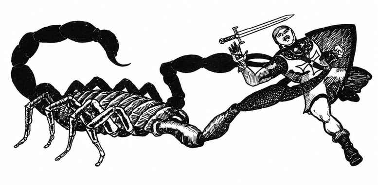
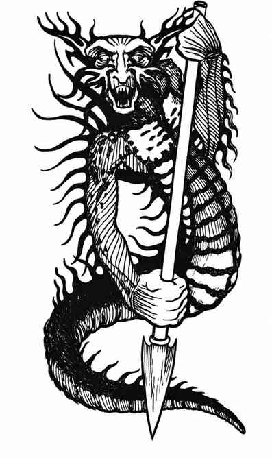

火蜥蜴 · Salamander

 |
|
火蜥蜴来自火元素位面，偶尔为未知目的来到物质位面。它们憎恨寒冷，偏好 300 度以上的温度，低温下只能维持数小时；巢穴通常至少有 500 度，财宝也必须能承受这种高热。
火蜥蜴通常用金属矛攻击，造成 1–6 点武器伤害并额外造成等量热伤害；同时可用蛇状尾巴缠住敌人，造成 2–12 点挤压伤害，并因身体高热额外造成 1–6 点伤害。火焰抗性生物不受热伤害，但仍承受武器伤害。火蜥蜴只能被魔法武器、魔法生物或拥有巨大力量的生物伤害，免疫所有火焰攻击；睡眠、魅惑和定身法术无效。寒冷攻击每骰额外造成 1 点伤害。
火蜥蜴头部和躯干呈铜色，双眼黄色发光；下半身由橙色渐变为尾端暗红色。